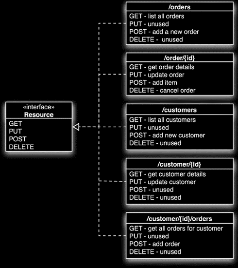

RESTful Web Services
Embracing the CRUD (and beyond)
Bremen Inside, 30.03.2007
Was ist REST?
- REpresentational State Transfer
- Entwurfsmuster für Web Service-Architektur
- zentraler Begriff: Ressourcen
- zum Beispiel User, Geonotes, Gruppen, ...
Prinzipien der Architektur
- HTTP: zustandslose Client/Server-Kommunikation
- Ressourcen über URI eindeutig referenzierbar:
- http://www.bremen-inside.info/geonotes/1
- uniforme Schnittstelle:
- CRUD (Create, Read, Update, Delete)
- HTTP (POST, GET, PUT, DELETE)
- SQL (Insert, Select, Update, Delete)
- Operationen lassen sich (teilweise) durch die HTTP-Methoden beschreiben.
- Wie ein Satz: HTTP-Methoden = Verb, URI = Nomen
Was ist in diesem Fall falsch?
GET http://www.bremen-inside.info/geonotes/update/1
- Operation wird in der URI mitgeteilt
- Konflikt: HTTP-Verb widerspricht der Action in der URI
HTTP-Methoden
- POST - neue Ressource erzeugen (create)
- POST http://www.bremen-inside.info/geonotes
- GET - Ressource abfragen (read)
- GET http://www.bremen-inside.info/geonotes (Liste aller Geonotes)
- GET http://www.bremen-inside.info/geonotes/1 (Geonote mit ID 1)
- PUT - bestehende Ressource bearbeiten (update)
- PUT http://www.bremen-inside.info/geonotes/1
- DELETE - Ressource löschen (delete)
- DELETE http://www.bremen-inside.info/geonotes/1
Beispiel (Java)

Wo sind die Daten?
- Im Body des HTTP-Requests (bzw. Response)
- Beispiel eines Bodys für eine neue Geonote:
- POST http://www.bremen-inside.info/geonotes
Okay, also nur vier Methoden?
- Wie kann ich die Repräsentation (XML, JSON, HTML, ...) der Daten beeinflussen?
- Wie kann ich Nicht-CRUD-Operationen aufrufen?
- Auf Basis der vier semantischen Methoden kann die Syntax erweitert werden:
- GET http://www.bremen-inside.info/geonotes.xml;within?reach=100m
- Liste aller Geonotes innerhalb einer Reichweite von hundert Metern.
- xml > eine mögliche Form der Repräsentation
- within > erweiterte Action (basiert semantisch auf einer der vier HTTP-Methoden)
- reach > Parameter
Danke für die Aufmerksamkeit!
Fragen?